In this lesson you will learn
|
From one chain to a real analysis
Lesson L7.2 built the machine: a likelihood, a random walker and a cloud of samples. Real analyses use exactly that machine, but they spend most of their effort on four practical questions:
- Which combinations of parameters do the data actually measure?
- What happens when a second measurement is added?
- Has the chain really finished exploring?
- How do the errors on the fitted parameters turn into errors on the quantities people care about?
1. Degeneracies: when parameters hide behind each other
Run the chain on the supernovae alone and the cloud is not round. It is a long, tilted ellipse: a universe with more matter and more dark energy fits the data almost as well as one with less of both. The parameters are degenerate along that direction — see degeneracy.
The reason is physical. Supernovae measure distances, and a distance depends on the whole expansion history at once. Extra matter slows the expansion, extra dark energy speeds it up; add both in the right proportion and the distances barely change.
The data measure combinations, not parameters Along the long axis of the ellipse the data are almost silent; across it they are precise. For supernovae the well-measured combination is roughly 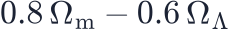 (the combination the 1998 discovery papers quoted), while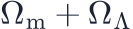 — the curvature — is poorly constrained. |
The single-parameter error bars in a table hide this. Quoting "" is correct, but the error comes almost entirely from the long axis. That is why cosmologists show contours, and why you should always look at them — lesson L7.1.
Marginalising The histograms along the edges of the contour plot are marginal distributions: the samples with the other parameter ignored. With samples, marginalisation is just "throw away that column". With a grid it would be an integral. |
2. Combining probes: multiply the likelihoods
Independent experiments have independent errors, so their likelihoods simply multiply:
The magic is in the directions. The CMB acoustic scale fixes the geometry of space,
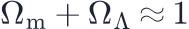
: a narrow band running the other way across the supernova ellipse. Each probe alone allows a long strip; the product allows only the small patch where the strips cross.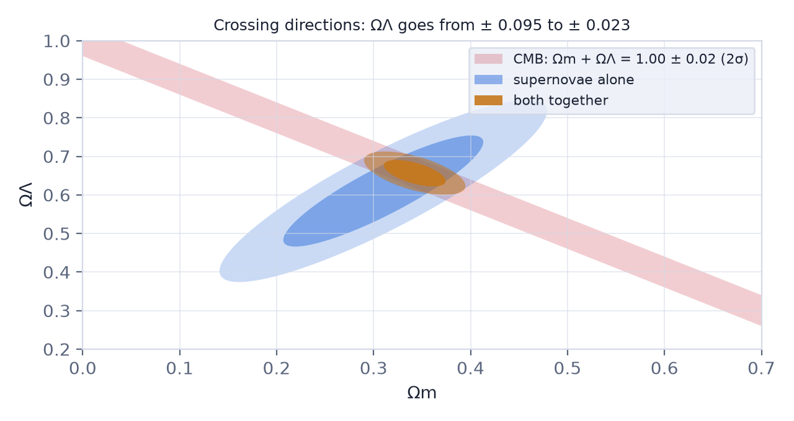
Numbers from the simulator With the real Pantheon+ supernovae the chain finds . Add the CMB geometry, 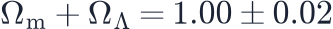 , and it becomes — four times tighter — although the CMB constraint alone says nothing at all about by itself. |
Try it: Likelihood & MCMC Explorer Choose "+ CMB geometry" as the second probe and compare the error on ΩΛ with the supernovae alone. Then try "+ BAO matter density": which direction does that one cut? |
Combining only works for consistent data Multiplying likelihoods assumes both experiments measure the same universe with honest error bars. If the two strips do not overlap — as with the Hubble tension — the product is a narrow patch in a place neither experiment likes. Always check that the probes agree before combining them. |
3. Has the chain converged?
A chain gives the right answer only once it has forgotten its starting point and visited the whole posterior in the right proportions. Four checks catch most failures.
Burn-in. The walker starts wherever you put it. Look at the trace: the early steps drift towards the good region. Discard them.
Autocorrelation. Successive samples are not independent — a walker takes small
steps. The autocorrelation length  counts how many steps it needs to
forget where it was, and the useful number of samples is the
effective sample size:
counts how many steps it needs to
forget where it was, and the useful number of samples is the
effective sample size:
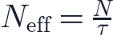
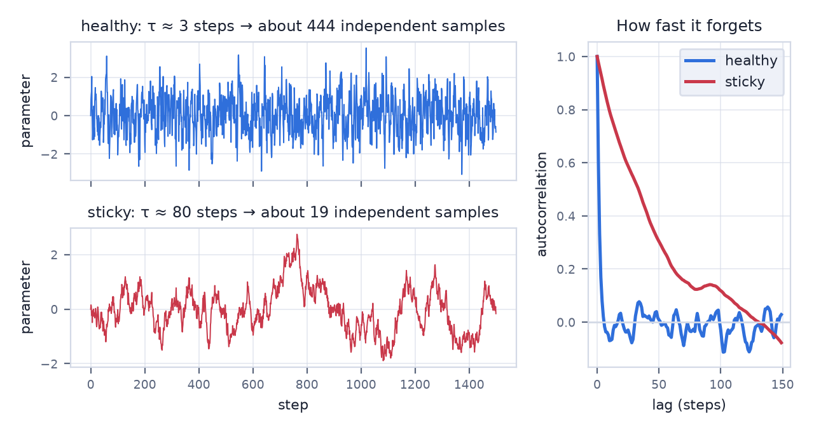
A sticky chain can look beautifully smooth in its trace and still contain only a
few dozen independent samples. Both a step that is too small (accepts everything,
moves nowhere) and a step that is too large (rejects everything, stays put) make
 large.
large.
Several chains, R̂. Start four walkers far apart. If they end up describing the same distribution, the between-chain spread matches the within-chain spread and
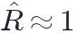
. Values above about 1.01 mean the walkers have not met yet.Sanity. Does the best fit agree with a simple grid search, when one is possible? Does the answer change when you double the chain length? If it does, it was not converged.
Thinning does not help Keeping only every tenth sample makes a chain look less correlated, but throws information away: the effective sample size never increases. Thinning is only a way to save disk space. |
4. Derived parameters: error propagation for free
Often the interesting number is not a fitted parameter but a function of them — the deceleration parameter
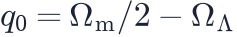
, the curvature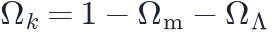
, the age of the universe. With samples there is nothing to derive: compute the quantity for every sample, and the mean and spread of the results are the answer and its error bar.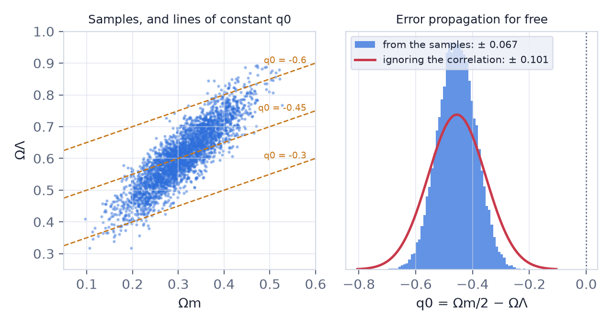
This matters because the parameters are correlated. The textbook propagation formula without the correlation term gives ; the samples give
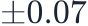
. The correlation is real information: matter and dark energy that move together partly cancel in . With samples it is included automatically.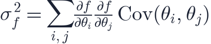
Where the difference comes from For the formula above gives 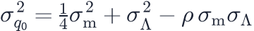 . With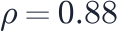 the last term removes about half of the variance. Dropping it is the "naive" error. |
Chains of measurements: the distance ladder
The same bookkeeping applies when a result is built in stages. The local Hubble constant comes from a three-rung distance ladder: parallaxes calibrate Cepheids, Cepheids calibrate type Ia supernovae, and distant supernovae measure the expansion (lesson L1.1). The rungs use different stars and different telescopes, so their errors are independent, and independent percentage errors add in quadrature:
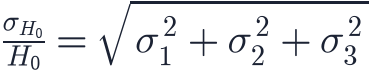
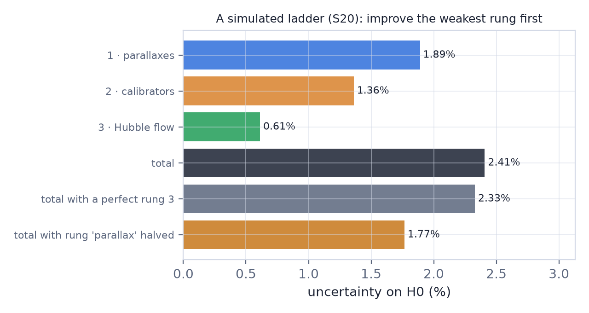
Two lessons follow. First, improve the weakest rung: perfecting a rung that contributes 0.6% barely moves a 2.4% total. Second, a Monte Carlo check is easy: simulate the whole measurement many times and look at the spread of the answers — exactly what a chain does for a likelihood.
Try it: Distance Ladder Builder Start from the Key Project preset. Find the rung that dominates the error budget, fix only that one, then press Repeat 300× to confirm the error bar. |
Systematic errors do not average away
Everything above describes statistical errors, which shrink as data accumulate. A systematic error is different: a parallax zero point that is slightly wrong, Cepheids blended with their neighbours, a calibration offset between two telescopes. It shifts every measurement in the same direction, so averaging a thousand of them reproduces the shift a thousand times.
A precise answer can be precisely wrong In the ladder simulator a parallax offset of 20 µas moves H0 by about 2 km/s/Mpc while the error bar keeps shrinking with more supernovae. The chain, the error propagation and the Monte Carlo will all report the same confident, biased number. Only an independent method — a different calibrator, a different telescope, a different physical probe — can reveal it. This is why the Hubble tension is argued over with JWST Cepheids, tip-of-the-red-giant-branch stars and gravitational-wave sirens rather than with more of the same data. |
Try it: Distance Ladder Builder Add a parallax zero-point offset of +20 µas and raise the number of Hubble-flow supernovae. Watch the error bar shrink while the systematic shift stays put. |
The tools of the trade
The simulator's walker is the Metropolis algorithm from 1953. Research codes use the same idea with better proposals: emcee moves an ensemble of walkers that learn the shape of the posterior, Cobaya and MontePython connect samplers to Boltzmann codes such as CAMB and CLASS, and nested sampling (PolyChord, dynesty) also computes the evidence used to compare models. The diagnostics in this lesson apply to all of them.
Remember this
|